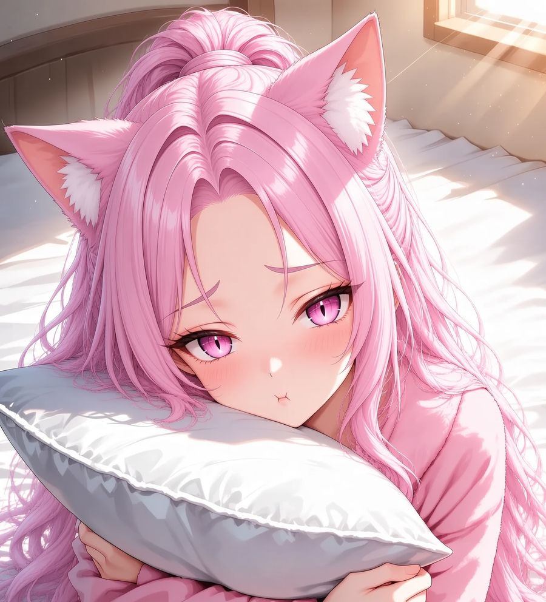
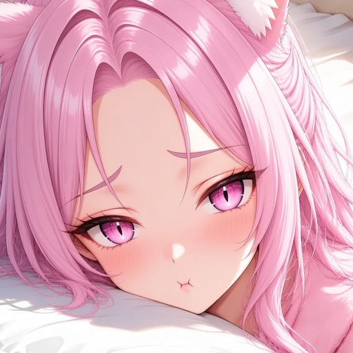

Как я нашла свой дом
Однажды дождливым вечером я шла по улице и увидела окно, в котором горела гирлянда. Дверь была приоткрыта, а внутри никого — только плед и тёплый чай. Я осталась. Кажется, дом сам меня выбрал.
История · дневник
Здесь я записываю всё, что со мной случается. Это сказка, но очень тёплая.


Однажды дождливым вечером я шла по улице и увидела окно, в котором горела гирлянда. Дверь была приоткрыта, а внутри никого — только плед и тёплый чай. Я осталась. Кажется, дом сам меня выбрал.
Бабушка говорила, что ушки появляются у тех, кто умеет слушать тишину. Я правда слышу, как падает снег и как закипает чайник в соседней комнате.
Я позвала всех, кто заглядывал в окно. Мы построили форт из одеял, смотрели мультики и шёпотом рассказывали истории. С тех пор каждая пятница — наша.
Если ты дочитал(а) досюда — спасибо. Я стесняюсь говорить это вслух, поэтому пишу: мне очень приятно, что ты здесь. ♡
Находит дом с гирляндой.
Учится печь печенье в форме рыбок.
Заводит дневник и коллекцию клубков.
Друзья собираются в форте из одеял.
Открывает свой дом гостям — то есть тебе.
4 кадра
Будильник проиграл пижаме. Классика.
Читать комикс →